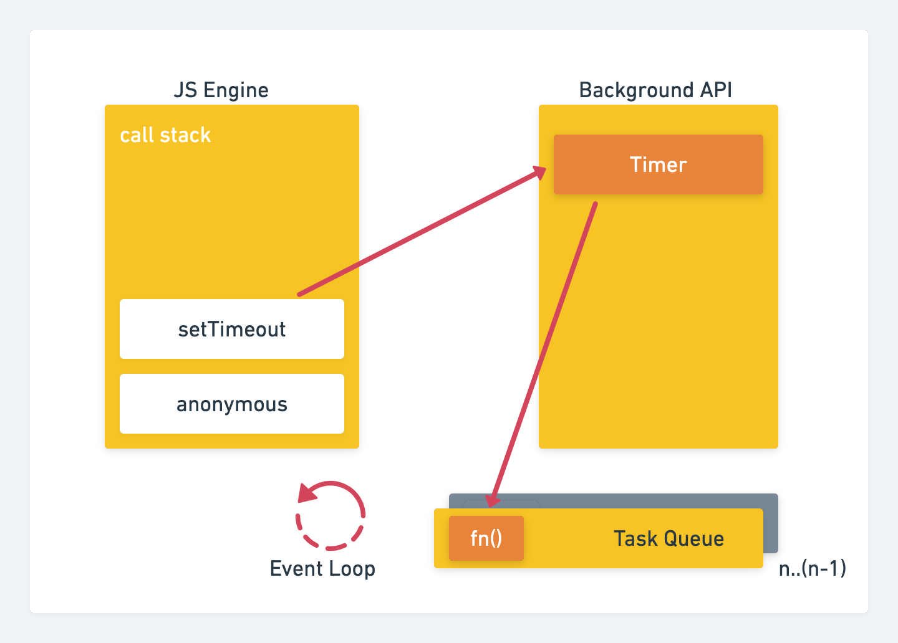

비동기 처리
1//대충 이런 구조의 코드..
2function checkValue(){
3 //로직검사..
4}
5
6setTimeout(function(){
7 checkValue();
8}, 500);
9
10function getData(){
11 //AJAX로 소스를 받아오는 코드..
12};
13
14getData();
자바스크립트를 처음 접했을 때, setTimeout이 왜 순서대로 시행 안되지??.. (why 나중에 시행되는거야..🤔)해서비동기에 대한 개념을 숙지했다. 대충 콜백함수로 넘겨서 호출해 해결하고 비동기 프로세스에 대한 개념 자체를 더 배우려하지 않았다. 이번에 Node.js 스터디를 하면서 비동기 프로세스를 꼭 알아야 성능 향상에 도움이 된다는 사실을 알게되었고 책과 강의를 통해 내가 이해한 비동기 처리과정을 최대한 간략하게 정리해보았다.

이벤트 루프는 비동기 프로세스를 이해하기 위해 꼭 알아야 하는 자바스크립트 런타임 구성요소이다. 보통 실행 컨텍스트에 의해 선언한 코드들이 콜스택에 차곡차곡 모여지는데, 여기서 비동기 요청(setTimeout 또는 AJAX 비동기 통신 등등..)들은 백그라운드 영역으로 보낸다.
그러면 해당 함수는 콜스택에서 빠져나오게되고, 해당 비동기 API와 함께 백그라운드 영역에 담게된다. (대표적인 예로 타이머를 그렸지만, DOM Event 및 AJAX통신도 해당된다.)
여기서 백그라운드 영역은 JavaScript가 처리하는것이 아니라 실행 환경에서의 런타임 엔진(V8과 같은)에서 처리된다는 것을 꼭 명심하자. 비동기 함수들은 모두 Background영역에서 이루어지게된다. 서버에서 값을 수신해오거나, 특정 시간 뒤에 콜백을 처리하거나.. 이런 API동작이 완료되면 TaskQueue로 콜백 함수를 보내면서 콜스택이 비어져있는지 확인 후 TaskQueue에 있는 함수들을 하나 씩 콜스택으로 옮겨 시행하게된다.
Callstack
실행 할 함수들을 담아놓은 영역, 변수와 스코프 정보들이 담겨있는 실행 컨텍스트가 스택 구조로 이루어져있다.
Eventloop
콜스택과 태스크 큐들을 감시하면서 콜스택이 비워져있으면 태스크 큐에 담겨져있는 함수를 가져와 실행시킬 수 있게 해준다. 따라서 콜스택이 비워져있지 않으면 비워질 때 까지 대기하는데 이러한 대기 시간 차이가 비동기 함수들의 완료 시간을 지연시키게 만든다.
TaskQueue
백그라운드 영역에서 보낸 콜백 함수들을 받아 Queue구조로 저장되어있는 공간이다. 보통 완료된 순서대로 위치하지만 특정 경우에는 바뀌기도한다. (예를들면 Promise 객체의 then 이행 함수가 우선적으로 수행된다.)
정리
아직도 어렵긴하지만 예전에 내가 생각한대로 되지 않았던 코드들이 왜 안되었는지 고개를 끄덕이게 만들었다..
특히, Node.js 환경에서는 저 백그라운드 영역이 non-blocking처리가되는 영역이라고하니 이런 흐름을 꼭 숙지해야할 것 같다.
참고자료
- Node.js 교과서 - 조현영 저
- What the heck is the event loop anyway? - Philip Roberts